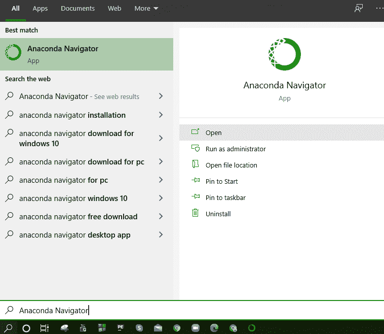
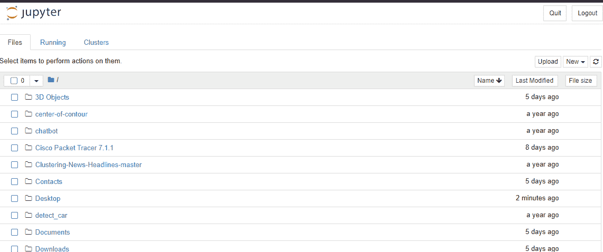
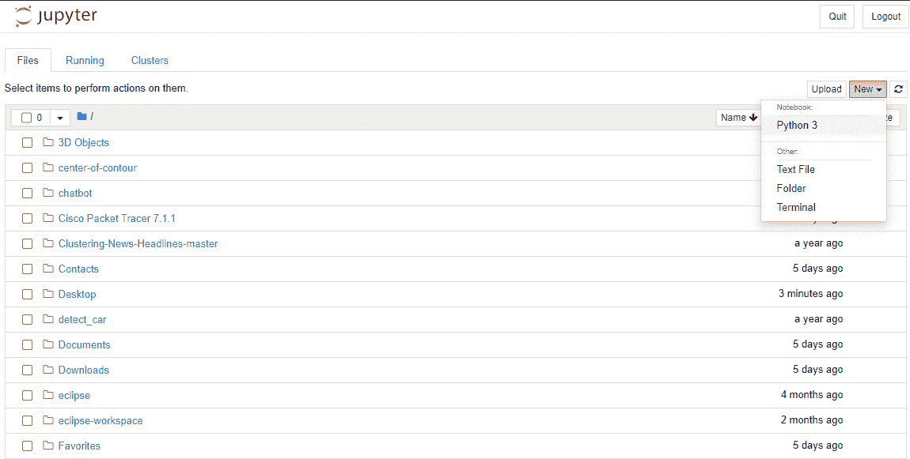

Jupyter 笔记本中的 Matplotlib
原文：https://www.studytonight.com/matplotlib/matplotlib-with-jupyter-notebook
在本教程中，我们将介绍 Jupyter 笔记本，其中我们将使用 Matplotlib 模块创建可视化，我们还将介绍 Jupyter 笔记本的主要功能。
Jupyter Notebook 是一款开源网络应用，借助它可以创建和共享包含实时 python 代码、可视化和代码解释的文档。
Jupyter Notebook 用于数据清理、数据可视化、机器学习、数值模拟，还有更多这样的用例。
Jupyter 主要代表 Ju lia、 Pyt hon、 R uby，最初 Jupyter Notebook 是为这三个开发的，但后来开始支持很多其他语言。
Ipython 由 Fernando Perez 于 2001 年开发，作为命令外壳用于交互计算在多种编程语言中以 Python 开始。然后在 2014 年，费尔南多·佩雷斯宣布了一个分拆项目，该项目被称为Jupyter项目。
nd 正如我们今天所知， IPython 作为 Python shell 和 Jupyter 的内核继续存在，而 IPython 的笔记本和其他语言部分则转移到了 Jupyter 的名字下。
Jupyter 还增加了对 Julia、R 和 Ruby 的额外支持。
Jupyter(IPython)笔记本的特点
让我们讨论一下 Jupyter Notebook 的特性，然后我们将讨论如何启动它，并将其与 Matplotlib 库一起使用:
Jupyter Notebook 是一个非常灵活并且非常有助于分享代码的工具，有完整的解释、评论、图片等。在一起，如果您正在学习编码，这将非常有帮助。
需要注意的是 Jupyter 笔记本通过网络浏览器运行，笔记本本身可以托管在您的本地机器或远程服务器上。
在 Jupyter 笔记本的帮助下，查看代码、执行代码、以及直接在你的网页浏览器中显示结果变得很容易。
借助 Jupyter 笔记本，您可以与他人共享您的代码。它允许对共享代码和数据集进行交互更改。
假设有一段代码，你想逐行解释它是如何工作的，通过实时反馈，你可以简单地将代码嵌入到 Jupyter 笔记本中。最好的是代码会保持全功能，你可以随着加入互动，解释、展示、讲述同时进行，这是有益的。
让我们从 Jupyter 笔记本开始。首先您需要打开 Anaconda 导航器(这是 Anaconda 中包含的桌面图形用户界面，允许您启动应用并轻松管理 Conda 包、环境和通道，而无需使用命令行命令)。
现在在你的机器上搜索 Ananconda Navigator(如果你想使用 Jupyter Notebook-https://docs.anaconda.com/anaconda/navigator/install/)，你应该提前安装它:

在打开 Python 导航器后，你会看到在其分布中安装的组件。让我们向您展示:
现在你只需要启动 Jupyter 笔记本就可以开始使用 Matpotlib 了。只需点击推出，它就会推出 Jupyter 笔记本。
正如我们在上面提到的 Jupyter Notebook 通过网络服务器运行。
启动后，您将看到以下内容:

如果你想从制作一个可以轻松完成任务的新笔记本开始，只需点击“文件选项卡中的“新建按钮”即可轻松完成。
在那里你会看到很多选项，比如制作一个终端、制作一个常规文本文件、制作一个文件夹，最后但同样重要的是，你还会看到制作一个 Python 3 笔记本的选项。让我们向您展示一个图示以供您清楚理解:

总结:
在本教程中，我们学习了如何安装 Jupyter notebook，如何使用它以及关于 Jupyter Notebook 的其他细节。我们正在讨论 Jupyter 笔记本，因为我们将把它与 Matplotlib 模块一起用于绘图和可视化。